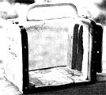

Help your youngsters study elfin crawlers and pint-size fliers by making this handy . . .
Watching grasshoppers, beetles, centipedes, and all manner of backyard minivteatuTes is a favorite summer pastime for my children. Unfortunately, this sort of observation is too often cut short when the viewed object abruptly scurries, hops, or flutters out of sight. In an effort to help my budding bug watchers prolong their studies, I came up with the easyto-construct portable insect cage shown here. Now my kids can capture all the insects they want . . . watch them to their hearts' content . . . and then let the critters go.
To create a similar arthropod arena for your youngsters, gather up the following: a 6" X 121/2" piece of screen wire . . . a 4" X 6" piece of 1/2"-thick plywood . . . two 4" X 4-1/2" slabs of 3/4"-thick plywood . . . a pair of small door hinges with screws to fit ... one hook-and-eye latch ... a 6-1/2"long strip of metal hanger strap . . . a 1/2 "wide by 4 "-long scrap of felt . . . one cabinet handle plus screws . . . some black electrical tape . . . several dozen carpet tacks . . . and a handful of 2d nails.
Begin construction by folding the electrical tape in. half over all the edges of he screen wire (this not only looks neat but will prevent children from getting scratched later on). Then, with a saw, round the upper corners of the two 4" X 41/2" plywood boards that will form the ends of the box. That done, cut a 3-1/2"-high by 2"-wide door from one of the boards and affix it in its proper place, using the small hinges.
Now, nail the two 4" X 4-1/2" slabs to each end of the 4" X 6" plywood base. With this frame secure, start tacking the screen to it, beginning along one side of the base and working your way up the front and back walls simultaneously, making sure to hammer the tacks through the wire that's covered with tape. Continue tacking the sides until you reach the middle of the top. Then take the 61/2" hanger strap and stretch it across the "peak" of the box. Tack it firmly to each end . . . lay the mesh down over it . . . and attach the cabinet handle. When you have completed that step, finish affixing the mesh so that you have a tight, neat cage. (If all of this sounds complicated, just use the picture accompanying this article as a guide.)
Finally, screw the hook to the door and the eye to the wall, glue the felt strip to the inside of the wall where the door swings open (to prevent small insects from escaping between it and the wall), and-as an added personal touch-paint your child's name onto one end of the container. There you have it: a made-from-scratch bug box ready for action! All you need now is a good field guide to the insects in your area . . . and a couple of bug-curious kids to test the contraption out.
|
 |
|
|